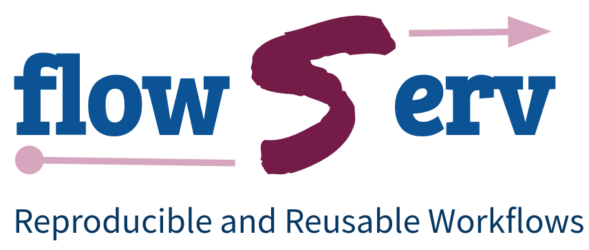
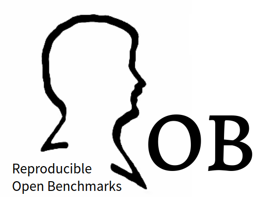

I am a Research Engineer at NYU's Center for Data Science, developing tools and infrastructure to support data scientists. I am also involved in the Data Science and Software Services effort to establish a new university-wide service to provide software engineering resources and data science consulting to members of the NYU community.
My main research interest is in databases, in particular data curation, data integration, data quality and sensor data management and analytics. Bioinformatics is another interest of mine, in particular genome assembly and annotation. More recently I have started to work on projects that focus on reproducibility and reusability of data analysis workflows.
I received my Diploma in Computer Science from the Technical University of Berlin. I was a member of the Berlin-Brandenburg Graduate School on Distributed Information Systems and received my PhD from Humboldt University Berlin. The main focus of my dissertation was on quality of genome data and on conflict resolution in data integration. I spend four years as a Research Fellow in the Database Group at the University of Edinburgh, working on aspects of data curation (e.g., managing evolving databases, provenance management, and annotation). Before joining NYU, I was a Research Scientist at CSIRO where I led a team of Research Scientists and Engineers working on aspects of meta-data management and interoperability.
|  |  |
Below is a selection of projects I am currently working on or that I have worked on over the past years.
Data Frame History Store
History Store (HISTORE) is a Pyhton package for maintaining snapshots of evolving data sets. The package provides an implementation of the core functionality that was implemented in the XML Archiver (XArch). The package is a lightweight implementation that is intended for maintaining data set snapshots that are represented as pandas data frames.
HISTORE is based on a nested merge approach that efficiently stores multiple dataset snapshots in a compact archive [Buneman, Khanna, Tajima, Tan. 2004]. The library allows one to create new archives, to merge new data set snapshots into an existing archive, and to retrieve data set snapshots from the archive.
Reproducible and Reusable Data Analysis Workflows
The Reproducible and Reusable Data Analysis Workflow Server (flowServ) is an experimental prototype to support reuse and evaluation of published data analysis pipelines as well as community benchmarks of data analysis algorithms. flowServ is not yet-another workflow engine. The aim instead is to provide a layer between a client (e.g. a Web user interface) and a workflow engine to facilitate the execution of a parameterized workflow templates.
flowServ was motivated by the Reproducible Open Benchmarks for Data Analysis Platform (ROB). The goal of ROB is to allow user communities to evaluate the performance of their different data analysis algorithms in a controlled competition-style format. In ROB, the benchmark coordinator defines the workflow template along with input data. Benchmark participants provide their own implementation of the variable workfow steps. The workflow engine processes workflows on submission. Execution results are maintained by flowServ in an internal database.
This work is part of the Scalable CyberInfrastructure for Artificial Intelligence and Likelihood Free Inference Project (SCAILFIN).
Data-Driven Domain Discovery (D4)
The Data-Driven Domain Discovery Project (D4) develops algorithms for domain discovery in large collections of related tabular (structured) datasets. Given collection of datasets, D4 outputs a set of domains discovered from the collection in a holistic fashion, by taking all the data into account. Similar to word embedding methods such as Word2Vec, D4 gathers contextual information for terms. But unlike these methods which aim to build context for terms in unstructured text, we aim to capture context for terms within columns in a set of tables. The intuition is that terms from the same domain frequently occur together in columns or at least with similar sets of terms.
This project is a collaboration with Juliana Freire (NYU), Masayo Ota (NYU), and Divesh Srivastava (AT & T Research).
Vizier - Streamlined Data Curation
Vizier aims to streamline data curation and enable domain experts who do not have computer science expertise to curate their own data. Vizier features an intuitive interface combining elements of notebooks and spreadsheets, allowing analysts to quickly see, edit, and revise data. This capability is complemented by a framework for automated data cleaning steps that are seamlessly integrated with manual curation operations. The heart of Vizier is a system for managing uncertainty and provenance of curation workflows and data, enabling the user to keep track of higher-level curation operations as well as track the lineage of data.
This project is a collaboration with Juliana Freire (NYU), Oliver Kennedy (University at Buffalo), and Boris Glavic (Illinois Institute of Technology). An overview of project ideas can be found in the following papers: HILDA 2016, SIGMOD 2019 (Demo), and CIDR 2020.
Standard Cortical Observer
The Standard Cortical Observer (SCO) provides a platform to support reproducible and comparable research results on computational models that predict brain responses to arbitrary sensory inputs. As part of the project three major components were developed: (1) a computational model (The Standard Cortical Observer Model 1.0) of how visual images are transformed into patterns of activity in the visual parts of the human brain, (2) a standard dataset of images and human fMRI measurements for validation of the SCO model and future models, similar to standard datasets used for machine vision and machine learning, and (3) a computational platform including data store, web API, and graphical user interface.
The project is a collaboration with Jonathan Winawer and Noah Benson from the NYU Department of Psychology and Center for Neural Science. The work was funded in part by an MSDSE Data Science Seed Grant. All system components are available on GitHub: SCO Model, Data Store, Engine, Web Service, Worker, Python Client, and , User Interface.
i-EKbase - Intelligent Environmental Knowledgebase
The i-EKBase system is designed to monitor large farming areas using remote sensor data. The main source of input is data from Landsat and Modis satellites. i-EKBase integrates remote sensing data with various other sources (e.g., Bureau of Meteorology weather observations, Australian Soil Data, etc.). Farmers are provided with information and guidance related to the local biodiversity, soil quality, water availability, irrigation, topography, and early pest and plant disease prevention to improve crop yield management.
This is joint work with Ritaban Dutta. The system is the foundation for iekbase.com.
Semantic Sensor Data
Semantic enrichment of sensor data addresses the problems of (re-)use, integration, and discovery. A critical issue is how to generate semantic sensor data from existing data sources. In this project, we developed an approach to semantically augment an existing sensor data infrastructure to re-publish the data as Linked Open Data. In our use case we show how semantic sensor data can help with the growing challenge of selecting sensors that are fit for purpose.
This is joint work with Liliana Cabral, Michael Compton, Ahsan Morshed, and Yanfeng Shu. The work has been presented at SSN 2013 and ISWC 2014.
Link My Data
One of the biggest obstacles to reuse of third-party sensor data is a lack of knowledge about data properties (e. g., provenance and quality) leading to a lack of trust in the data. Link My Data is a first step towards overcoming this problem. Link My Data provides a platform for data curation that allows users to share knowledge about individual sensors and sensor observations. The system supports annotation and transformation of sensor data on the Web to improve data quality and (re-)usability.
South Esk Hydrological Sensor Web
Limited freshwater resources in many parts of Australia have led to a highly regulated system of water allocation. Poor situation awareness can result in over-extraction of water from river systems, compromising river ecosystems. To increase situation awareness, we developed a continuous flow forecasting system based on the Open Geospatial Consortium Sensor Web Enablement standards. A prototype Hydrological Sensor Web has been established in the South Esk river catchment in north-eastern Tasmania. Observations from the aggregated sensor assets drive a rainfall-runoff model that predicts river flows at key monitoring points in the catchment.
The South Esk Hydrological Sensor Web was our test-bed for research on management and re-use of sensor observations and sensor metadata. I was involved in developing a provenance management system for a continuous flow forecasts system. The generation of predicted river flows involves complex interactions between instruments, simulation models, computational facilities and data providers. Correct interpretation of information produced at various stages of the information life-cycle requires detailed knowledge of data creation and transformation processes. Such provenance information allows hydrologists and decision-makers to make sound judgments about the trustworthiness of hydrological information.
This project won the Asia Pacific ICT (APICTA) Award for Sustainability and Green IT, 2012 and the Australian iAward for Green IT and Sustainability, 2011.
Database Wiki
Both relational databases and wikis have strengths and weaknesses for use in collaborative data management and data curation. Relational databases offer many advantages such as scalability, query optimization and concurrency control, but are not easy to use and lack other features needed for collaboration. Wikis have proved enormously successful as a means to collaborate because they are easy to use, encourage sharing, and provide built-in support for archiving, history-tracking and annotation. However, wikis lack support for structured data, efficiently querying data at scale, and fine-grained data provenance. To achieve the best of both worlds, we implemeted a general-purpose platform for collaborative data management, called DBWiki. Our system not only facilitates the collaborative creation of a structured database; it also provides features not usually provided by database technology such as versioning, provenance tracking, citability, and annotation.
This is joint work with Peter Buneman, James Cheney, and Sam Lindley. DBWiki has been demonstrated at SIGMOD 2011.
XArch - XML Archiver
XArch is an archive management system that allows one to create, populate, and query archives of multiple database versions. XArch is based on a nested merge approach that efficiently stores multiple database versions in a compact archive. The system allows one to create new archives, to merge new versions of data into existing archives, and execute both snapshot and temporal queries using a declarative query language. XArch has an extensible IO layer and is currently capable of archiving data in XML format as well as relational databases.
This is joint work with Peter Buneman and Ioannis Koltsidas. XArch has been demonstrated at SIGMOD 2008 and is available for free download.
This is a list of selected publications.
2020
Data-Driven Domain Discovery for Structured Datasets
Proceedings of the VLDB Endowment (VLDB), 2020. To appear
Your notebook is not crumby enough, REPLace it
Conference on Innovative Data Systems Research (CIDR), 2020
2019
Data Debugging and Exploration with Vizier
ACM International Conference on Management of Data (SIGMOD), Demo Track, 2019
2016
The exception that improves the rule
Workshop on Human-In-the-Loop Data Analytics (HILDA), 2016
2014
A Use Case in Semantic Modelling and Ranking for the Sensor Web
International Semantic Web Conference (IWSC), 2014
2013
Towards Content-Aware SPARQL Query Caching for Semantic Web Applications
Web Information Systems Engineering (WISE), 2013
From RESTful to SPARQL: A Case Study on Generating Semantic Sensor Data
SSN@ISWC 2013: 51-66
Link My Data: Community-based Curation of Environmental Sensor Data
Intl. Symposium on Spatial and Temporal Databases (SSTD), Demo Track, 2013
2012
Discovering conditional inclusion dependencies
ACM Conf. on Information and Knowledge Management (CIKM), 2012
Improving data quality by source analysis.
ACM J. Data and Information Quality, Vol. 2, Issue 4, March 2012
2011
The Database Wiki Project: A General-Purpose Platform for Data Curation and Collaboration
SIGMOD Record, Vol. 40, No. 3, September 2011
Using Links to prototype a Database Wiki
Symposium on Database Programming Languages (DBPL), Seattle, WA, 2011
DBWiki: A Structured Wiki for Curated Data and Collaborative Data Management
ACM International Conference on Management of Data (SIGMOD), Demo Track, 2011
2010
Detecting Inconsistencies in Distributed Data
IEEE International Conference on Data Engineering (ICDE), 2010
2009
Curating the CIA World Factbook
International Journal of Digital Curation, Issue 3, Volume 4, 2009
2008
XArch: Archiving Scientific and Reference Data
ACM International Conference on Management of Data (SIGMOD), Demo Track, 2008
Sorting Hierarchical Data in External Memory for Archiving
Proceedings of the VLDB Endowment (VLDB), 2008
2006
Describing Differences between Databases
ACM Conf. on Information and Knowledge Management (CIKM), 2006
2005
Columba: An Integrated Database of Proteins, Structures, and Annotations
BMC Bioinformatics, 6(1):8, 2005
2004
Mining for Patterns in Contradictory Data
ACM Workshop on Information Quality for Information Systems, 2004
COLUMBA: Multidimensional Data Integration of Protein Annotations
Workshop on Data Integration in Life Sciences (DILS), 2004
2003
Data Quality in Genome Databases
Proceedings of the Conference on Information Quality (IQ), 2003
Problems, Methods, and Challenges in Comprehensive Data Cleansing
HUB-IB-164, Humboldt University Berlin, 2003